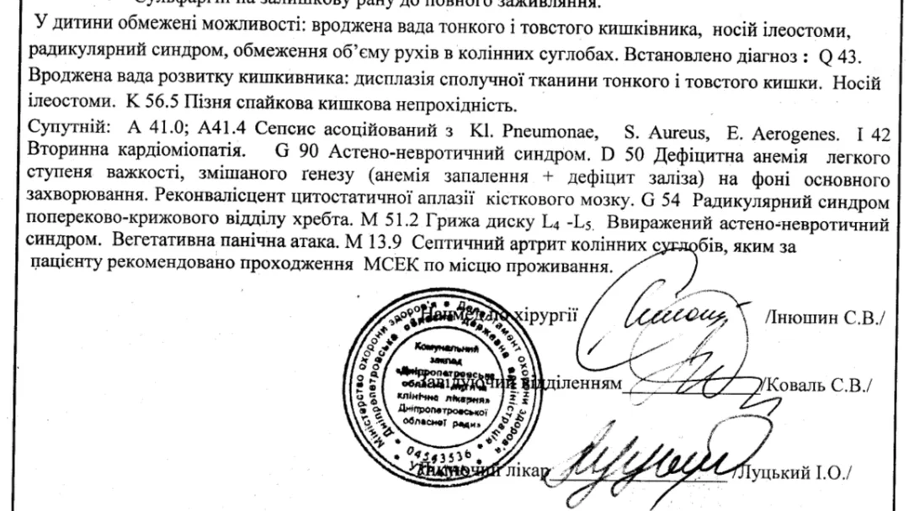
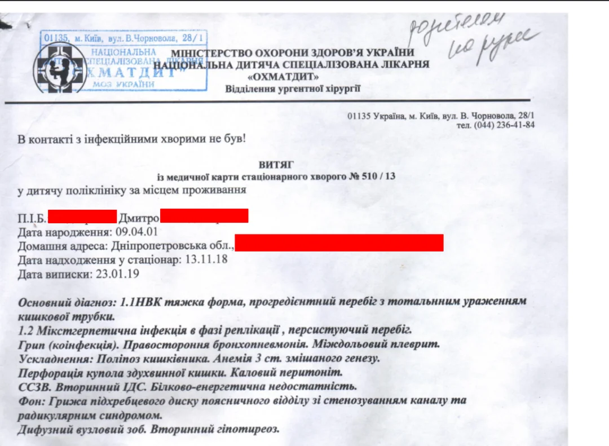
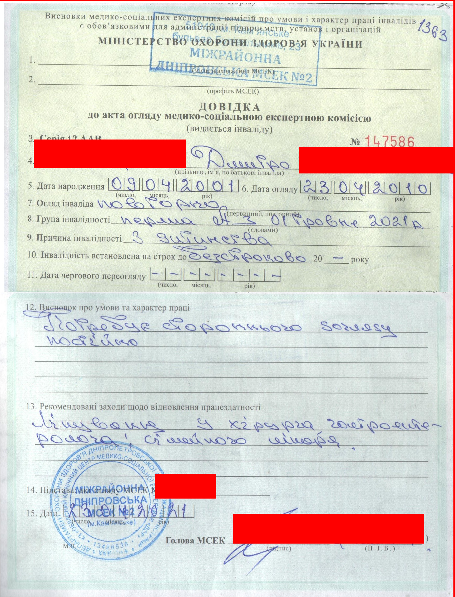

"Каждая история заслуживает продолжения" — Ptaxa
К сожалению, я очень многое не могу рассказать, это будет либо долго, либо больно.
Да! Сейчас я коплю на переезд в Данию по статусу «беженца» (Специальный акт), поэтому если у вас есть финансы, которыми вы могли бы поделиться, я был бы очень благодарен.
Monobank jar number: 4874100032914403
Monobank Visa card: 4441114495097410
Monobank jar link
PayPal: gigobit2001@gmail.com



Discord: ptaxa.dev
TG: @Ptaxa_Dev
Основная причина — это остеохондроз 4 ст. на почве инфекции в Днепре.
Мне провели экстренную операцию, во время которой удалили часть тонкого и толстого кишечника и вывели стому (илеостома). Это спасло мне жизнь, когда стоял выбор между операцией и летальным исходом.
Я имею инвалидность 1-А группы согласно пройденной медкомиссии в Украине (МСЭК).
Я родился в 2001 году и на данный момент проживаю в Днепропетровской области. В 2016 году поступил в колледж: учился хорошо, получал стипендию и поддерживал отличные отношения с преподавателями.
Это было замечательное время, когда я узнал много нового и искренне был рад учёбе. А ещё я завёл двух лучших друзей, которые до сих пор регулярно навещают меня в гостях. В общем, жил самой обычной подростковой жизнью.
В 2018 году, когда я был уже на третьем курсе, меня поразила болезнь, связанная с ЖКТ. Сначала я лечился в больнице своего города, но когда врачи поняли, что не смогут меня вылечить, отправили в больницу более крупного города — в Днепр. Там тоже пытались бороться за моё здоровье, хотя у них был и другой вариант: провести операцию по выводу стомы. Это, конечно, доставило бы мне проблем, но не привело бы к тем последствиям, о которых я расскажу дальше.
Много чего было в стенах больниц, и все говорили мне о том, что смогут меня вылечить. Чего, конечно же, не произошло. Не знаю, хотели ли они действительно меня спасти или же получить «бонусы» за лечение неведомой болезни — мы никогда этого не узнаем.
Итак, я оказался в Киеве. Столица, центр экономики и всего такого. Опять же, мне говорили, что меня вылечат (и в этом не соврали), только цена уже была высока. Из-за огромного количества капельниц, которые преследовали меня весь мой путь, я в основном лежал на кровати — с утра до ночи просто смотрел, как падают капли. Были моменты, когда я оставался без капельницы, но это длилось мгновение: приносили новую стойку с флаконами на целый день. После длительного лечения, которое не давало результатов, у меня начали слабеть ноги, и постепенно способность ходить становилась мне недоступной. Под конец моего прекрасного «лечения» я уже не мог стоять.
А когда наступил день «Х», ко мне пришёл хирург (видимо, так обязывал регламент) и сказал:
«Смотри, нам нужно провести операцию, либо ты умрёшь».
Это было очень давно, поэтому за достоверность «буква в букву» я не ручаюсь. Вполне очевидно, что я ответил: я согласился и лёг под нож.
Так я лишился части себя. Ног? Нет, части толстого и тонкого кишечника. После чего, как и положено, меня направили в реанимацию, где я пробыл неделю. А потом перевели в общую палату. И, честно? Я безмерно благодарен хирургам и всему персоналу в Киеве за спасение своей жизни.
Хотел бы я сказать, что дальше всё было хорошо, но увы. Во время пребывания в общей палате у меня случилась паническая атака (хотя тогда я этого не осознавал), но всё же она прошла. Моя мама оказала мне первую помощь. Через какое-то время меня перевели обратно в Днепр.
Уже здесь были моменты, которые врезались в память. Как-то раз мне нужно было сделать рентген в связи с переносом стомы (из-за спаивания кишки). Меня привезли в кабинет, но возникла неожиданная проблема: как сделать рентген на постсоветском аппарате, если я не могу стоять? Решение врачей: взять меня под руки и пытаться удержать у щита какое-то время. Стоит ли говорить, что это была плохая идея? В результате я рухнул коленями на пол (слава богу, он был деревянный) и в слезах прокричал:
«Да на колени, блять, меня поставьте!»
И, о чудо, это сработало. Как же мне было жаль мою маму, которая вбежала на мой крик в рентген-кабинет...
Главное, что хочу сказать про «обратный путь в Днепр» — в больнице я подхватил инфекцию (скорее всего, из-за снятия подключичного катетера), и начался сущий ад. Каждый день температура держалась на уровне 39–40 градусов. Ежедневно мне кололи анальгин с димедролом, что немного облегчало состояние, но только для того, чтобы поспать. До самого последнего дня лечения мне было очень плохо.
Но день выписки... Я помню, как радовался, когда мне сказали, что это последняя капельница. Наверное, эти эмоции невозможно передать словами. Меня выписали: неходячего, стомированного, кое-как живого.
После всех этих испытаний было приятно наконец вернуться домой — всё-таки родные стены помогают. К сожалению, коленные суставы к тому моменту уже перестали разгибаться, но мы всё равно не теряли надежды.
Дома было тяжело: полная неопределённость, не было понятно, что делать дальше и как жить дальше. Но мы продолжали держаться.
Через какое-то время тяжело заболела мама. Это слишком больно и долго расписывать, но она потеряла возможность двигаться, и в итоге её сердце не выдержало и остановилось. Никому не желаю увидеть и почувствовать такое. Вскоре после этого не стало и бабушки по отцовской линии.
Я остался с отцом и собакой. Ещё с 50 000 долгом за отопление, и долгами отца примерно на ту же сумму.
Мне нужна помощь. На данный момент есть возможность отправиться в Данию, где мне смогут оказать медицинскую помощь и поставить на ноги, но, как это принято, «цена вопроса» — 2000$.